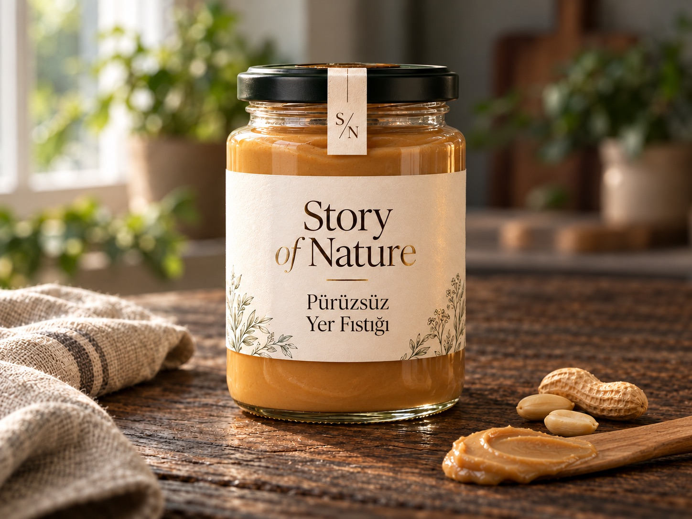
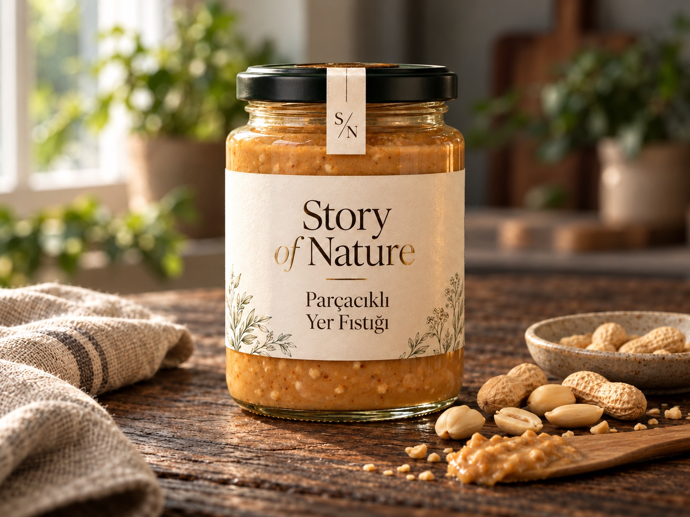
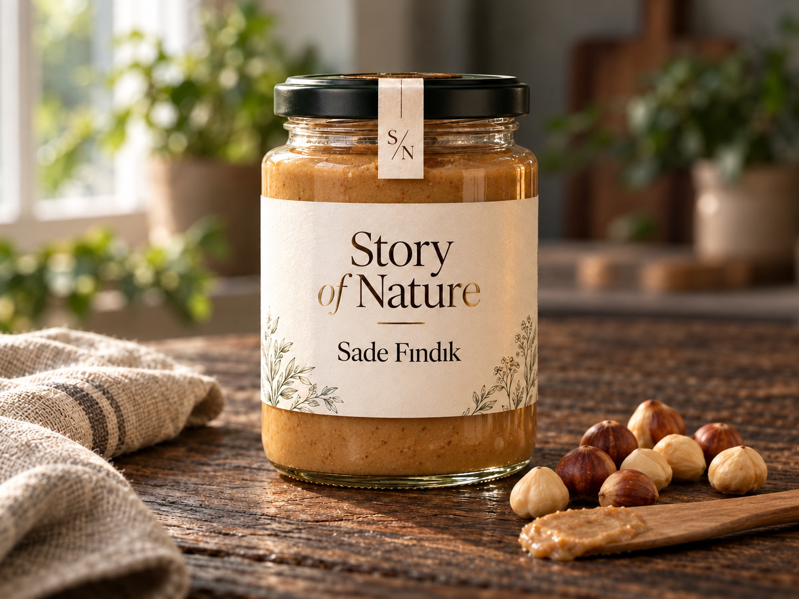
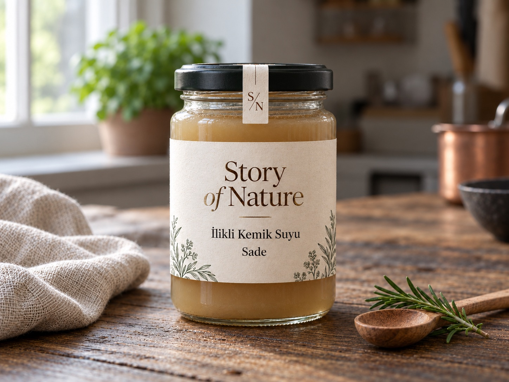
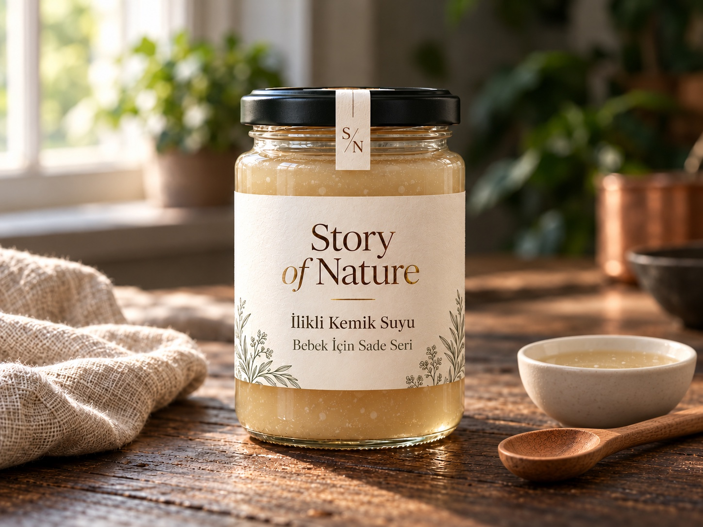
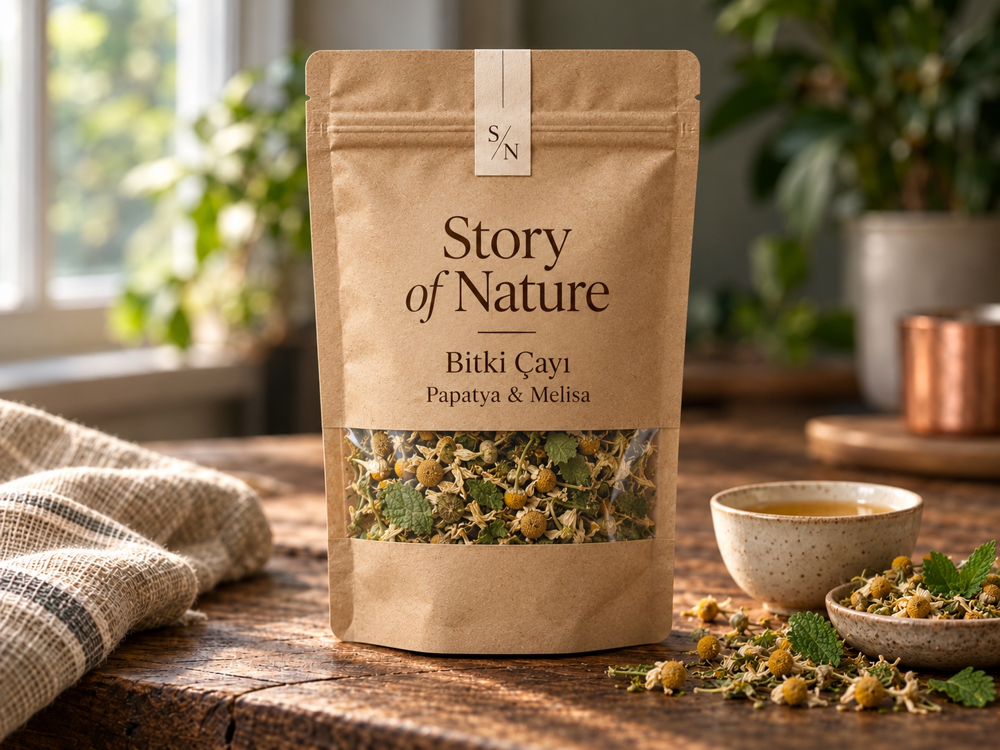

Tahin & Kuruyemiş Ezmeleri
Sade Tahin
Susamın kavruk ve belirgin karakteri.
Yaklaşık 229 TL / 200 g

Görseller temsili sunumdur; ürün fotoğraflarının üzerinde hiçbir kapatıcı efekt bulunmaz.
04 / GELENEKSEL EZME · MÜSTAKİL ÜRÜN KARTI
Düzgün sürülebilir doku arayanlar için.
Tahin & Kuruyemiş Ezmeleri serisindeki diğer lezzetler:
Düzgün sürülebilir doku arayanlar için. Kavrulmuş yer fıstığı, pürüzsüz profiliyle öne çıkar. Önerilen kullanım alanı: Kızarmış ekmek, yulaf ve yoğurt.
Yer fıstığı temelli lezzet yönü. Fıstık oranı, ilave içerik, alerjen ve kıvam bilgisi teklif sırasında paylaşılır. Gıda hassasiyetin veya özel bir beslenme tercihin varsa sipariş öncesinde güncel parti etiketini yazılı olarak isteyebilirsin.
Kavanozu açtıktan sonra buzdolabında sakla ve ambalaj üzerinde belirtilen sürede tüket.
Küçük Prens’in kendi gezegenindeki fidanına ve gülüne gösterdiği özen gibi, oluşturduğun siparişlerle doğaya bir fidan dikimini desteklemeyi hedefliyoruz. Ana sayfadaki Gezegen B-612 Fidan & Gül Bahçesi bölümünden cam fanusu kaldırıp fidanına can suyu verebilirsin.
AYNI SERİDEN DİĞER SEÇENEKLER
Tahin & Kuruyemiş Ezmeleri
Susamın kavruk ve belirgin karakteri.
Yaklaşık 229 TL / 200 g

Tahin & Kuruyemiş Ezmeleri
Küçük fıstık parçalarıyla daha belirgin doku.
Yaklaşık 209 TL / 200 g

Tahin & Kuruyemiş Ezmeleri
Fındığın kendi karakterini öne çıkaran sade yön.
Yaklaşık 349 TL / 200 g
SOFRANI TAMAMLA

İlikli Kemik Suları
Kemik suyunun kendi karakterini öne çıkaran yalın lezzet yönü.
Yaklaşık 249 TL / 300 ml

Bebek & Ek Gıda Serisi
İlave tuz ve baharat içermeyen, yalnızca ilikli kemikle hazırlanan yalın seçenek.
Yaklaşık 229 TL / 150–200 ml/g

Bitki Çayları
Çiçeksi ve hafif otsu bir fincan.
Yaklaşık 199 TL / 50 g